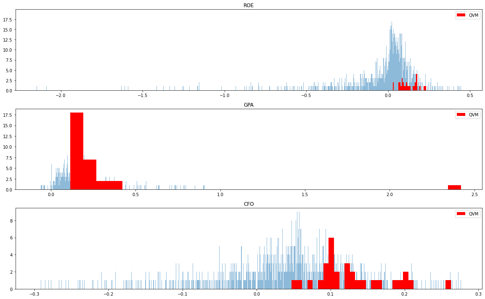
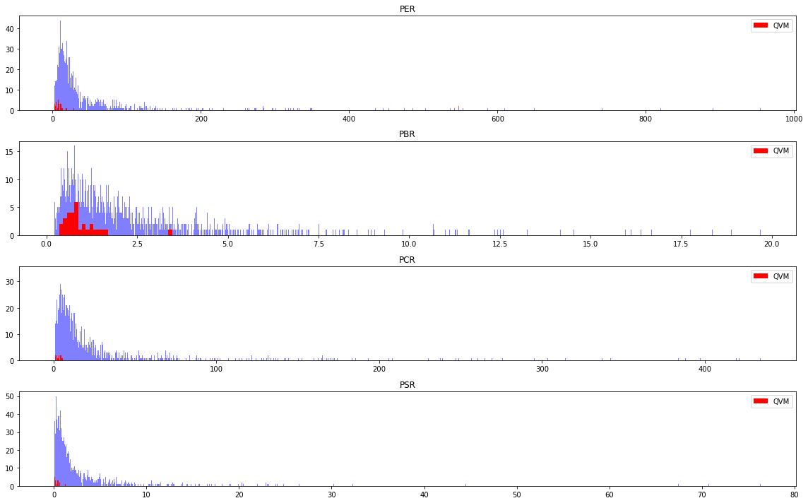
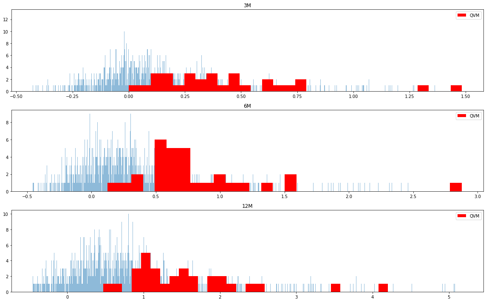
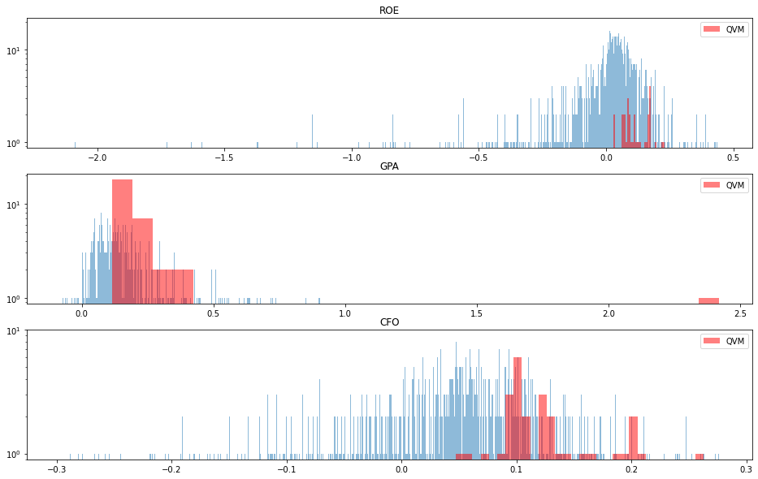

import pandas as pd
import numpy as np
from statistics import stdev
import pickle
from datetime import date
import matplotlib.pyplot as plt
from scipy.stats import zscore
import seaborn as sns
KOR_ticker = pd.read_csv('data/KOR_ticker.csv', index_col=0)
KOR_ticker['종목코드'] = KOR_ticker['종목코드'].astype(np.str).str.zfill(6)
KOR_value = pd.read_csv('data/KOR_value.csv', index_col=0)
KOR_value.index = KOR_value.index.astype(np.str).str.zfill(6)
KOR_price = pd.read_csv('data/KOR_price.csv', index_col = 0)
with open('data/KOR_fs.pickle', 'rb') as f:
KOR_fs = pickle.load(f)
if date.today().month in(1,2,3):
num_col = KOR_fs['매출액'].columns.str[0:4].get_loc(str(date.today().year - 2))
else:
num_col = KOR_fs['매출액'].columns.str[0:4].get_loc(str(date.today().year - 1))
q_roe = (KOR_fs['지배주주순이익'] / KOR_fs['자본']).iloc[:, num_col]
q_gpa = (KOR_fs['매출총이익'] / KOR_fs['자산']).iloc[:, num_col]
q_cfo = (KOR_fs['영업활동으로인한현금흐름'] / KOR_fs['자산']).iloc[:, num_col]
q_profit = pd.concat([q_roe, q_gpa, q_cfo], axis = 1)
q_profit.columns = ['ROE', 'GPA', 'CFO']
factor_quality = q_profit.rank(ascending = False, axis = 0).apply(zscore, nan_policy='omit').sum(axis = 1, skipna=False)
factor_value = KOR_value.rank(axis = 0).apply(zscore, nan_policy='omit').sum(axis = 1, skipna=False)
ret = KOR_price.pct_change()
ret_3m = ret.iloc[-60: ].apply(lambda x: (x+1).prod()-1)
ret_6m = ret.iloc[-120: ].apply(lambda x: (x+1).prod()-1)
ret_12m = ret.iloc[-252: ].apply(lambda x: (x+1).prod()-1)
ret_bind = pd.concat([ret_3m, ret_6m, ret_12m], axis = 1)
ret_bind.columns = ['3M', '6M', '12M']
factor_mom = ret_bind.rank(ascending = False, axis = 0).apply(zscore, nan_policy='omit').sum(axis = 1, skipna=False)
factor_bind = pd.concat([factor_quality, factor_value, factor_mom], axis = 1)
factor_bind.columns = ['Quality', 'Value', 'Momentum']
factor_allocation = [0.33, 0.33, 0.33]
factor_qvm = (factor_bind.apply(zscore, nan_policy='omit') * factor_allocation).sum(axis = 1, skipna=False)
invest_qvm = (factor_qvm.rank() <= 30).values
from functools import reduce
df_list = [KOR_ticker[['종목코드', '종목명']].set_index('종목코드'), # 티커
q_profit, # 퀄리티
KOR_value, # 밸류
ret_bind # 모멘텀
]
df = reduce(lambda left, right: pd.merge(left, right, left_index = True, right_index = True, how='inner'), df_list)
df['select'] = 'N'
df.loc[invest_qvm, 'select'] = 'Y'
df.head()
| 종목명 | ROE | GPA | CFO | PER | PBR | PCR | PSR | 3M | 6M | 12M | select | |
|---|---|---|---|---|---|---|---|---|---|---|---|---|
| 005930 | 삼성전자 | 0.094550 | 0.244077 | 0.172609 | 19.219868 | 1.817233 | 7.680882 | 2.117597 | -0.050000 | 0.372742 | 0.716632 | N |
| 000660 | SK하이닉스 | 0.091604 | 0.151890 | 0.173021 | 21.357349 | 1.956426 | 8.246823 | 3.183544 | 0.074510 | 0.607981 | 0.648616 | N |
| 035420 | NAVER | 0.121392 | 0.311745 | 0.085058 | 63.682596 | 7.730534 | 44.096413 | 12.031509 | 0.285948 | 0.356897 | 1.274566 | N |
| 051910 | LG화학 | 0.027280 | 0.152509 | 0.141120 | 119.536000 | 3.260929 | 10.490713 | 2.037277 | -0.089888 | 0.434783 | 2.005059 | N |
| 207940 | 삼성바이오로직스 | 0.052405 | 0.064771 | 0.031459 | 215.242158 | 11.279760 | 256.671747 | 44.534135 | -0.018657 | 0.156891 | 0.654088 | N |
def remove_outlier(df, cutoff = 0.01):
q_low = df.quantile(cutoff)
q_hi = df.quantile(1 - cutoff)
df_trim = df.loc[(df > q_low) & (df < q_hi)]
return(df_trim)
fig, axes = plt.subplots(3, 1, figsize=(16, 10))
for n, ax in enumerate(axes.flatten()):
df = q_profit.iloc[:, n]
df_mod = remove_outlier(df)
l = len(df_mod)
ax.hist(df_mod, bins = l, alpha = 0.5)
ax.hist(q_profit.iloc[invest_qvm, n], bins = 30, color = 'r', label = 'QVM')
ax.legend(loc="upper right")
ax.set_title(q_profit.columns[n], size = 12)
fig.tight_layout()
plt.show()

fig, axes = plt.subplots(4, 1, figsize=(16, 10))
for n, ax in enumerate(axes.flatten()):
df = KOR_value.iloc[:, n]
df_mod = remove_outlier(df)
l = len(df_mod)
ax.hist(df_mod, bins = l, alpha = 0.5, color = 'blue')
ax.hist(KOR_value.iloc[invest_qvm, n], bins = 30, color = 'r', label = 'QVM')
ax.legend(loc="upper right")
plt.yscale('log')
ax.set_title(KOR_value.columns[n], size = 12)
fig.tight_layout()
plt.show()

fig, axes = plt.subplots(3, 1, figsize=(16, 10))
for n, ax in enumerate(axes.flatten()):
df = ret_bind.iloc[:, n]
df_mod = remove_outlier(df)
df_mod = df_mod[df_mod != 0]
l = len(df_mod)
ax.hist(df_mod, bins = l, alpha = 0.5, color = 'blue')
ax.hist(ret_bind.iloc[invest_qvm, n], bins = 30, color = 'r', label = 'QVM')
ax.legend(loc="upper right")
plt.yscale('log')
ax.set_title(ret_bind.columns[n], size = 12)
fig.tight_layout()
plt.show()

from matplotlib import gridspec
data = q_profit
n = len(data.columns)
fig = plt.subplots(figsize = (16, 10) )
for i in range(n):
plt.subplot(n, 1, i+1)
df = data.iloc[:, i]
df_mod = remove_outlier(df)
l = len(df_mod)
plt.hist(df_mod, bins = l, alpha = 0.5)
plt.hist(df.iloc[invest_qvm], bins = 30, color = 'r', alpha = 0.5, label = 'QVM')
plt.yscale('log')
plt.legend(loc="upper right")
plt.gca().title.set_text(data.columns[i])
plt.show()
